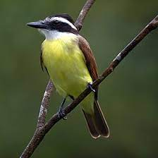

O bem-te-vi é uma ave passeriforme da família dos Tiranídeos.
Conhecido também como bem-te-vi-de-coroa, bem-te-vi-verdadeiro e em alguns lugares do NE como cirino e no EUA como kiskidee.
É provavelmente o pássaro mais popular de nosso país, podendo ser encontrado em cidades, matas, árvores à beira d'água, plantações e pastagens. Em regiões densamente florestadas habita margens e praias de rios.
É também muito popular nos outros países onde ocorre, recebendo nomes onomatopeicos em várias línguas como kiskadee em inglês, qu´est ce em francês (Guiana) e bichofêo em espanhol (Argentina).
